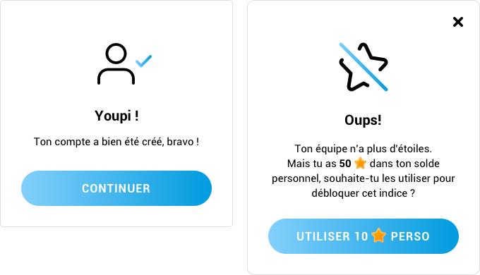

L’IMPORTANCE DU WORDING DANS LES INTERFACES D’AUJOURD’HUI

Nous parlons d’expérience utilisateur·ice dans les applications mobiles, les sites
web et à peu près tout ce qui nous entoure aujourd’hui qui rend service à l’Humain.
Seulement, il n’y a pas uniquement la façon dont fonctionne une interface qui
garantit une expérience intéressante, agréable et avant tout, réussie. Il y a
également la façon dont nous nous adressons à elle ou lui, et c’est de ça dont nous
allons parler. Alors réfléchissons ensemble et trouvons le wording parfait pour nos projets !
C’EST QUOI, LE WORDING ?
Le wording, souvent appelé « microcopy » en anglais, c’est le contenu présent dans
une interface. Celui qui va parler à l’utilisateur·ice, qui va le ou la guider dans sa navigation
et lui permettre de trouver ce qu’il·elle recherche le plus rapidement et le
plus facilement possible.
Différent du contenu rédigé dans un objectif marketing, le wording dont nous
allons parler ne permet pas de mieux référencer son site web, mais de rendre plus
ergonomique et efficace une interface pour une personne.
COMMENT S’ADRESSER À SES UTILISATEURS·RICES
Vouvoiement ou tutoiement ?
Même si beaucoup d’articles en anglais existent sur le sujet du wording, ceux-ci ne
sont pas confrontés à cette problématique qui existe vraiment chez nous Français :
le vouvoiement ou le tutoiement. Le choix est souvent remis en question dans la vie
d’un projet.
Parfois la réponse est toute trouvée, il est évident qu’impots.gouv.fr ne tutoiera pas
ses utilisateurs·trices, ce serait très mal perçu. Mais qu’en est-il d’un jeu ? D’une
application un peu ludique ? Ou même un outil sérieux mais qui proposera parfois
de petits conseils pratiques ?
- En fait, la réponse dépend de plusieurs critères :
- La cible et l’âge des utilisateurs·ices
- L’image du service par rapport à ces personnes
- L’orientation voulue (cordial, amical, etc.)
- La proximité avec l’utilisateur·ice
L’exemple le plus évident qui me vient à l’esprit, c’est l’application Vinted ; un
service qui permet de vendre ses propres vêtements d’occasion pour en acheter de
« nouveaux » ou les échanger avec d’autres Vinties (nom donné aux utilisateurs·ices
de Vinted). Vinted tutoie tout le monde, le but étant d’instaurer une notion de
communauté, de proximité et de confiance. Il faut que les utilisateurs·ices puissent
converser facilement les un·e·s avec les autres, et le tutoiement permet de pallier à
cette barrière de l’inconnu.
Chez Mobizel, nous avons été confrontés à cette question récemment, dans la
conception d’une application de jeu :Quaestyo, une sorte d’escape game
numérique, auquel on peut jouer en équipe. Il fallait trouver une façon légère de
présenter ce jeu pour que l’utilisateur·ice se sente à l’aise dans l’ambiance des
thèmes proposés et dans l’application, sans dénaturer l’image de Quaestyo qui se
veut un peu mystérieuse de par son suspens.
Le tutoiement a été préféré, et ça fonctionne très bien ! De plus, l’utilisation du
« tu » dans les messages d’encouragement ou de confirmation aide vraiment à la
mise en place du système de gamification, et donc à la fidélisation du joueur. Le
combo parfait !

Quel ton utiliser ?
Parfois, ce n’est pas le vouvoiement ou le tutoiement qui va nous aider à trouver un
ton sympa. On peut très bien vouloir être gentil et chaleureux, sans vouloir être le
« meilleur pote » de l’utilisateur•ice. Et c’est bien souvent le cas pour de nombreux
outils ! Prenons par exemple Trello, qui possède un chouette petit Husky comme
mascotte. L’émotion que nous prodigue ce petit personnage suffit à rendre l’outil
beaucoup plus ludique, pourtant, on vouvoie l’utilisateur•ice.
Comme quoi, le wording joue un grand rôle dans le design émotionnel finalement !
Dans une interface, si les actions ne laissent pas beaucoup de place au wording
destiné à l’utilisateur·ice, il est possible d’en cacher de petits morceaux dans les
éléments d’interactions qui confirment que quelque chose a bien été réalisé.
Exemple tout bête, et probablement le plus fréquent dans une application mobile :
la création de compte.
L’utilisateur·ice vient de se battre avec un formulaire souvent beaucoup plus long
qu’il n’aurait dû l’être. Il·elle a peut-être même dû corriger certains champs suite à
des erreurs de frappe ou autre, alors c’est l’occasion de lui indiquer, lorsqu’il·elle a
réussi à s’inscrire, qu’il·elle a traversé cette étape avec succès !
Ce qui nous amène sur la piste du bon langage à utiliser. Soutenu, courant ou
familier ? Là encore, cela dépend du service, de la cible etcetera etcetera… Dans
tous les cas, il faut essayer au maximum d’inclure l’utilisateur·ice dans ce que l’on
essaie de lui dire. Après tout, c’est à lui·elle que l’on s’adresse !
Exemples :
« Félicitations, ton/votre compte a bien été créé. »
« Super ! Nous sommes heureux·ses de vous compter parmis nous »
« Bienvenue à bord, moussaillon ! »
Pro tip :Ces petites phrases seront parfaites accompagnées de jolies illustrations maison !
Et la question du genre ?
Depuis peu de temps, Vinted (dont nous parlions tout à l’heure) essaie de faire
attention à la question du genre. Par défaut, l’application considère tous·tes ses
utilisateurs·trices comme des femmes. Tous les adjectifs sont accordés au féminin.
Donc un homme qui souhaite commander des chaussures se verra appelé « elle »,
« la vintie », « la vendeuse » etc. Dommage, parce que Vinted demande le sexe de la
personne dans ses paramètres !

Vinted c’est pour les filles.
Le design inclusif, des personnes fabuleuses ont parlé de cela avant moi, et très bien
même. Antonin Le Mée, pour ne citer que lui, parle d’inclure les minorités en
cessant de demander le sexe de la personne, qui est souvent une information, bien
que très personnelle, inutile au bon fonctionnement d’un service, mais en lui
demandant plutôt à quel pronom la personne souhaite être adressée.
Découvrez les slides de sa conférence UX Rennes ou mieux,écoutez-le !
ET EN PRATIQUE, ON FAIT COMMENT ?
Les consignes et les actions
La façon dont un·e utilisateur·ice va être interpellé·e va changer selon ce qu’il·elle
s’apprête à faire. Lorsque l’application va proposer une action, les consignes et les
explications devront s’adresser à elle·lui à l’impératif.
Exemple :
« Choisi une photo sympa pour ton profil ! »
« Sélectionnez une des options suivantes. »
En revanche, les actions doivent venir de l’utilisateur, donc être à l’infinitif.
Exemple :
« Ajouter une photo qui déchire »
« Modifier mes informations »
Des labels, toujours plus de labels !
- On pourrait avoir une règle : 1 icône = 1 label. On n’est jamais trop explicite.
Seulement il n’est pas évident de concilier le joli et le pratique, et en tant que
designer, je me retrouve souvent face à cette problématique. Voici deux contraintes
identifiées :-
La contrainte de la place occupée par un pictogramme en plus d’un label qui
pourra potentiellement être très long, et encore plus long si ce mot doit être
traduit dans une autre langue. Donc il faut prévoir une taille de texte
suffisamment petite pour le placer sans compromettre la lisibilité de ce
dernier. -
La contrainte de l’usage qui n’est pas à négliger : est-ce que l’utilisateur·ice
va devoir utiliser cette action tous les jours ? Auquel cas, aura-t-il·elle bien
mémorisé le pictogramme ? Si tel est le cas, peut-être puis-je me passer d’un
label ?
-
La contrainte de la place occupée par un pictogramme en plus d’un label qui
Des interactions peuvent dans certains cas permettre plus facilement de répondre à
ces deux attentes. Par exemple, dans les bottom navigation bar natives d’Android,
les icônes sont affichées seules, au clic sur l’un des items le label se dévoile. Cela
permet plusieurs choses : la compréhension de cet item et la confirmation qu’on a
bien cliqué quelque part grâce à l’animation de l’icône qui se déplace et du texte qui
apparaît.
C’est un exemple parmi tant d’autres, mais attention tout de même à ne pas
reproduire ce fonctionnement partout. Il fonctionne ici, mais pas forcément
ailleurs.

Instagram n’aime pas les labels. Image issue de l’article « How icons are ruining interfaces » de
Hampus Sethfors
Les formulaires sont des lieux propices au développement du wording, de par les
labels de ceux-ci, leurs placeholders et potentiellement les petits conseils que l’on
peut retrouver dans un champ. Pour un champ dont le label sera « mot de passe »,
le texte affichera des caractères spéciaux pour masquer la saisie, un petit message
peut préciser des contraintes, par exemple « minimum 8 caractères », « essayez
d’ajouter des chiffres et des majuscules ! »
Le wording pour demander des informations à un utilisateur
On demande de plus en plus à l’utilisateur·ice d’accepter des conditions
d’utilisation, des cases à cocher pour recevoir ou non des e-mails à gogo, des pop
-ups d’inscription pour parler d’une offre incroyablement banale… De plus en plus
d’efforts à réaliser et à comprendre pour un·e pauvre utilisateur·ice sans défense,
qui ne souhaite potentiellement que commander une paire de chaussette ou
consulter ses données bancaires… Alors il y a des façons pour demander. Déjà, on
dit s’il vous plaît !
Prenons les cookies par exemple. Axeptio (service dédié à l’accompagnement dans
le consentement sécurisé selon les recommandations RGPD) a rédigé un article très
complet sur la mise en avant d’un style conversationnel plutôt que des bandeaux
que les gens ne lisent plus. (En plus, leurs illustrations sont très jolies ! #emotion).
Ils expliquent qu’en leur posant des questions, et en étant très clair sur l’utilisation
de ces petits biscuits, les utilisateurs·ices prennent le temps d’enregistrer leurs
préférences et accordent mieux leur confiance.
POUR TERMINER
C’est la toute première fois que quelque chose que je rédige moi-même est publique,
c’est une expérience très enrichissante et j’espère que ces quelques lignes vous
donneront envie de mettre autant d’amour dans vos interfaces que j’ai eu l’occasion
d’en mettre dans cet article !
POUR ALLER PLUS LOIN
Quelques réflexions de personnes incroyables :
- En français
- UX Writer : mini-rédaction pour maxi-impactpar Julia Osseland
- En anglais
- Microcopy: Tiny Words With A Huge UX Impactpar Nick Babich
- Is this my interface or yours?par Saito
- The Art of the Error Messagepar Marina Posniaket Tamara Hilmes
- 15 marvellous microcopy examples (and how they improve UX)par Nikki Gilliland
- The microcopyist: cancellation, confirmation, conflagrationpar Jason Fox